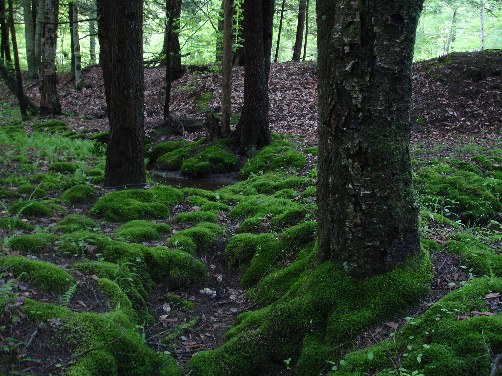

Mosses are small, non-vascular flowerless plants in the taxonomic division Bryophyta (/braɪˈɒfətə/,[3] /ˌbraɪ.əˈfaɪtə/) sensu stricto. Bryophyta (sensu lato, Schimp. 1879[4]) may also refer to the parent group bryophytes, which comprise liverworts, mosses, and hornworts.[5] Mosses typically form dense green clumps or mats, often in damp or shady locations.
Bushy Gazebo

Laminate flooring (also called floating wood tile in the United States) is a multi-layer synthetic flooring product fused together with a lamination process. Laminate flooring simulates wood (or sometimes stone) with a photographic applique layer under a clear protective layer. The inner core layer is usually composed of melamine resin and fiber board materials.[1] There is a European Standard No. EN 13329:2000 specifying laminate floor covering requirements and testing methods.

Garam masala (from Hindustani گرم مصالحہ/गरम मसाला garm masala, "hot spices") is a blend of ground spices originating from the Indian subcontinent. It is common in Indian, Pakistani, Nepalese, Bangladeshi, Sri Lankan and Caribbean cuisines. It is used alone or with other seasonings. The specific fixings differ by district, but it regularly incorporates a blend of flavors like cardamom, cinnamon, cumin, cloves and peppercorns. Garam masala can be found in a wide range of dishes, including marinades, pickles, stews, and curries.
Laminate flooring (also called floating wood tile in the United States) is a multi-layer synthetic flooring product fused together with a lamination process. Laminate flooring simulates wood (or sometimes stone) with a photographic applique layer under a clear protective layer. The inner core layer is usually composed of melamine resin and fiber board materials.[1] There is a European Standard No. EN 13329:2000 specifying laminate floor covering requirements and testing methods.
Garam masala (from Hindustani گرم مصالحہ/गरम मसाला garm masala, "hot spices") is a blend of ground spices originating from the Indian subcontinent. It is common in Indian, Pakistani, Nepalese, Bangladeshi, Sri Lankan and Caribbean cuisines. It is used alone or with other seasonings. The specific fixings differ by district, but it regularly incorporates a blend of flavors like cardamom, cinnamon, cumin, cloves and peppercorns. Garam masala can be found in a wide range of dishes, including marinades, pickles, stews, and curries.